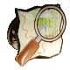
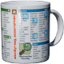
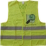

Fan-Artikel bei kernel concepts
Die Firma kernel concepts läßt seit Jahren für Linux und andere Open-Source-Projekte, Plüsch-Pinguine, Pins, T-Shirts und dergleichen herstellen und verkauft sie über ihren Online-Shop. Viele werden sie auch vom LinuxTag oder anderen Messen kennen. Ab sofort gibt es dort auch OpenStreetMap-Fan-Artikel.
Artikel
Zum Start gibt es einen Pin mit dem OpenStreetMap-Logo und Simon Budig hat eine supercoole "OpenStreetMap Cheat Mug" designed, die viele Tags auflistet, die man bei der täglichen Arbeit so braucht.
|  | Pin mit OpenStreetMap-Logo. Der Pin ist ca. 1,5cm hoch und 2cm breit und in der Form des Logos ausgeschnitten. | 1,50€ (inkl. 0,50€ Spende) Zum Shop |
|  | Diese Tasse enthält 179 der wichtigsten OSM-Tags als Gedankenstütze für den täglichen Gebrauch. Die Tasse ist spülmaschinenfest. Der komplette Aufdruck. | 7,50€ (inkl. 1,30€ Spende) Zum Shop |
{kind=link}
kernel concepts hat ausserdem auch die OSM-Warnweste im Programm (s.u.). Wenn Ihr noch andere Ideen habt, welche Fan-Artikel ihr gerne wollt, könnt ihr Petra Kirchner (petra@kernelconcepts.de) ansprechen.
Sammelbestellungen
Der Einzelversand insbesondere der Tassen ist natürlich relativ teuer. Vielleicht wollen einige lokale Gruppen Sammelbestellungen organisieren. Bei Fragen dazu könnt Ihr Euch an Petra Kirchner (petra@kernelconcepts.de) wenden. Auch wenn ihr auf einer Messe oder dergleichen die Sachen verkaufen wollt, läßt sich das arrangieren.
Die Tassen lassen sich besonders einfach in Lagen zu 12 oder einem Karton zu 36 verpacken.
Fan-Artikel beim First-to-Find-Shop
Artikel
Der First-to-Find-Shop verkauft ebenfalls die o.g. Fanartikel und ausserdem:
|  | Warnweste mit OpenStreetMap-Logo. | 9,94€ (inkl. 1,00€ Spende) Zum Shop |
 |
OSM-Aufkleber 10cm Durchmesser. | 0,54€ Zum Shop |
Spendenanteil
Ein Teil des Kaufbetrages geht bei den meisten Produkten als Spende an den FOSSGIS e.V., der sich in Deutschland um die Verwaltung von OSM-Spendengeldern kümmert. Das Geld steht komplett für OSM-Projekte zur Verfügung.